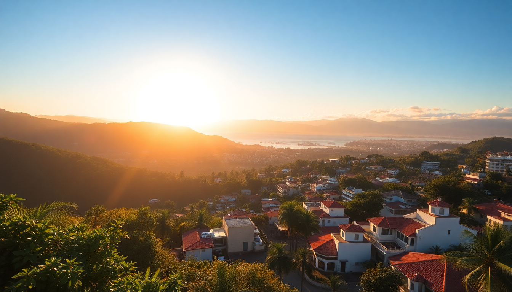

Where to Stay in San José: Best Neighborhoods for Every Budget

I showed up in San José with no plan, just a backpack and the vague idea that "Costa Rica starts in the capital." Three trips later, I’ve learned that where you plant your bag makes or breaks the trip. Here’s the honest breakdown of San José’s neighborhoods—no fluff, just what each area actually feels like on the ground.
What’s the best neighborhood for first-time visitors on a mid-range budget?
Barrio Escalante is my default recommendation for anyone who wants walkable streets, decent food, and less chaos than downtown. It’s the city’s foodie hub, with tree-lined sidewalks and a younger crowd.
- Hotel Grano de Oro: A converted Victorian mansion with a courtyard pool. Quiet, polished, and a 15-minute walk to the National Theatre. Rooms start around $120/night.
- Caféoteca: Tiny coffee shop that roasts in-house. Grab a pour-over and a pastry before heading out.
- Restaurante Sikwa: Indigenous-inspired cuisine using local ingredients. The wild boar stew is worth the splurge.
- Parque Morazán: Small park at the edge of Escalante, good for an evening stroll. Not a destination, but a reliable landmark.
I stayed at Hotel Grano de Oro on my second trip and found the staff genuinely helpful—they flagged which taxis to avoid and which routes were safe after dark. Escalante feels safe during the day and reasonable at night, but don’t wander into dark side streets alone.
Where should budget travelers or backpackers base themselves?
La Sabana is the neighborhood around San José’s main park—think Central Park vibes with a lake, soccer fields, and jogging paths. It’s not pretty, but it’s practical and cheap.
- Hostel Pangea: A backpacker staple with a rooftop bar, pool, and dorm beds from $15. It’s loud on weekends, but the social scene is solid.
- Sabana Park: Rent a bike or just walk the loop. On Sundays, the road closes to cars and families take over.
- Mercado de Mayoreo: A few blocks north, this wholesale market has the cheapest produce in the city. Not touristy, but worth a visit for the energy.
- Hotel La Sabana: A no-frills mid-range option with clean rooms and parking. About $50/night.
I spent a week at Hostel Pangea during a low-budget trip. The location is fine—you’re a 20-minute bus ride from downtown—but the real value is the free walking tour they organize. It’s a good way to get oriented without spending money. Just don’t expect charm; La Sabana is functional, not picturesque.
Which neighborhood is best for luxury or special-occasion stays?
Los Yoses and El Carmen are the upscale residential pockets east of downtown. This is where diplomats and business travelers stay, meaning quieter streets and higher price tags.
- Hotel Presidente: A four-star in the heart of El Carmen with a rooftop pool and a bar that serves decent mojitos. Rooms from $150/night.
- Restaurante Tin Jo: Pan-Asian in an old colonial house. The sushi is fine, but the curries are better. Reservations recommended.
- Casa Luisa: A boutique B&B in Los Yoses with four rooms and a garden. Very private, very quiet. Around $200/night.
- Museo de Jade: A short walk from El Carmen, this museum holds the largest collection of pre-Columbian jade in the Americas. Skip the gift shop.
I splurged on two nights at Hotel Presidente during a work trip. The location is ideal for hitting the National Theatre and the Gold Museum on foot, and the bellhop flagged a reliable driver for a day trip to Poás Volcano. The downside? The neighborhood feels sterile after 9 p.m. If you want nightlife, you’ll need to taxi to Barrio Escalante.
What about staying near the airport or for a quick layover?
Alajuela isn’t technically San José, but it’s a 15-minute drive from Juan Santamaría International Airport (SJO) and often cheaper than city-center hotels. If you have an early flight or arrive late, this is your spot.
- Hotel Aeropuerto: Directly across from the airport terminal. Basic but clean, with a 24-hour shuttle. Rooms from $70/night.
- Alajuela Central Market: A five-minute taxi from the airport hotels. Grab a casado (rice, beans, plantain, protein) for under $5.
- Mango Verde Hostel: A budget option with a garden and kitchen access. Dorms from $12.
- Juan Santamaría Museum: In the town center, this small museum covers Costa Rican history. Free entry on Sundays.
I’ve used Hotel Aeropuerto twice for red-eye connections. It’s not charming, but it saves the stress of a late-night taxi into the city. If you have a full day, skip the hotel and take the 20-minute bus from the airport to Alajuela’s market for lunch.
Is downtown San José safe for tourists?
El Centro is where the main sights are—Teatro Nacional, Mercado Central, Plaza de la Cultura—but it’s also where I’ve felt the most on edge. It’s not dangerous in a cartel way, but pickpocketing is common, and the streets get sketchy after dark. I’d only stay here if you want to be steps from museums and don’t mind noise.
- Hotel Santo Tomás: A colonial-style hotel near the National Museum. Rooms have high ceilings and some have balconies. Around $90/night.
- Mercado Central: Overpriced for tourists, but the sodas (small eateries) in the back serve real local food. Try the olla de carne.
- Teatro Nacional: Book a guided tour for the backstage access. The gold-leaf ceiling is genuinely impressive.
- Plaza de la Cultura: The central square is fine during the day, but I wouldn’t linger after 6 p.m.
I stayed one night at Hotel Santo Tomás to be close to the Gold Museum. The hotel itself is charming, but stepping outside felt like a negotiation every time—touts, street vendors, and the occasional aggressive panhandler. If you’re comfortable with urban grit, go for it. Otherwise, pick Escalante or Los Yoses and commute in.
Which neighborhood has the best access to public transportation?
Paseo Colón is a long avenue that connects downtown to La Sabana. It’s not a destination neighborhood, but it’s the best hub for buses and taxis heading to the coasts or mountains.
- Hotel Balmoral: A reliable mid-range option right on Paseo Colón. Rooms from $80/night.
- Terminal 7-10: The main bus station for routes to Manuel Antonio, Jacó, and Quepos. It’s a 10-minute walk from most Paseo Colón hotels.
- Parque de la Merced: A small park with a beautiful church. Safe during the day, but skip it at night.
- Soda La Perla: A no-frills lunch spot near the terminal. The casado con pollo is $4 and filling.
I used Hotel Balmoral as a base for a week of day trips—bus to Poás Volcano one day, taxi to the Orosi Valley the next. The location is loud (Paseo Colón is a main road), but the convenience of being steps from the bus terminal saved me hours of transit. Just bring earplugs.
FAQ
Is San José walkable, or do I need to rely on taxis? It depends on your neighborhood. Barrio Escalante and El Carmen are walkable for daytime errands, but you’ll want taxis or Ubers for anything outside a 20-minute radius. Downtown is walkable but chaotic. I used Uber consistently—it’s cheap ($3–$7 for most rides) and safer than hailing a street taxi. The public bus system works but requires route knowledge.
What’s the best time of year to visit San José? December through April is the dry season—blue skies, less rain, but also higher prices. I prefer February for the combination of good weather and fewer crowds. May through November is the rainy season; mornings are usually fine, but afternoon downpours are guaranteed. If you’re on a budget, the green season (May–June) offers lower hotel rates and lush scenery.
Should I book a hotel or an Airbnb in San José? Hotels, unless you want a full kitchen. Most Airbnbs in San José are in apartment buildings with thin walls and no concierge. Hotels like Hotel Grano de Oro or Hotel Presidente offer front-desk staff who can arrange drivers, recommend safe routes, and hold your luggage. I’ve done both and prefer hotels for the practical support—especially if you’re new to Costa Rica.
Conclusion
- Barrio Escalante for walkable food and mid-range comfort.
- La Sabana for budget stays and park access.
- Los Yoses or El Carmen for quiet luxury.
- Alajuela for airport convenience.
- Paseo Colón for bus connections to the rest of the country.
- Skip downtown El Centro unless you’re on a tight itinerary and don’t mind street hassle.